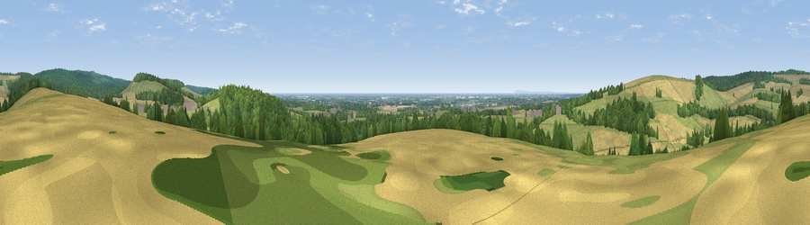

Viewpoint near Eartham
#9168 in England · top 21% of its area beats it · near Eartham · access?Where it is
The exact computed spot (SU 93175 09212). Click the marker for map links.
Public access: no public right of way or access land is recorded at this exact spot — it may be on private land. Computed from Natural England's CRoW access layer and OpenStreetMap rights of way — not the legal definitive map. Always verify locally.
The view, rendered

A 360° render of this exact spot computed from the terrain model, tree cover and land cover — summer colours, afternoon light, calibrated against photographs of famous viewpoints. Real trees, hedges and buildings will differ in detail.
The panorama
Grey silhouette: terrain skyline in each direction (720 bearings, Earth curvature and refraction included). Dashed green: skyline with trees (+15 m) and buildings (+8 m) as obstacles. Blue strip: how far the ground is visible on each bearing.
Where the view opens
Wedge length = distance to the farthest visible ground on that bearing (vegetation-aware). Rings at 10, 25 and 50 km.
What fills the view
43% grassland · 28% cropland · 25% woodland · 2% built-up · 2% water
Angular shares of the visible panorama (visual magnitude), not map area. Landscape diversity 0.54 (0–1 Shannon).
Key numbers
More beautiful places nearby
The staircase of upgrades: each row has a higher view potential than everything closer. Driving times are estimates from straight-line distance, calibrated against real road routing — check an actual route before setting out.
| Place | Direction | Drive | Score |
|---|---|---|---|
| Halnaker Hill | WNW · 1 km | ~4 min | 72.8 |
| Viewpoint near Bignor | NE · 5 km | ~10 min | 82.1 |
| Glatting Beacon | NE · 5 km | ~11 min | 84.3 |
| Bignor Hill | NE · 6 km | ~13 min | 84.4 |
| Linch Down | NW · 12 km | ~22 min | 85.2 |
| Beacon Hill | NW · 15 km | ~27 min | 85.8 |
| Chanctonbury Ring | E · 21 km | ~35 min | 87.0 |
| Viewpoint near St. Lawrence | SW · 50 km | ~71 min | 88.2 |
50.87491, -0.67709 · source: screening · position refined by local search. Computed location — check access rights before visiting.